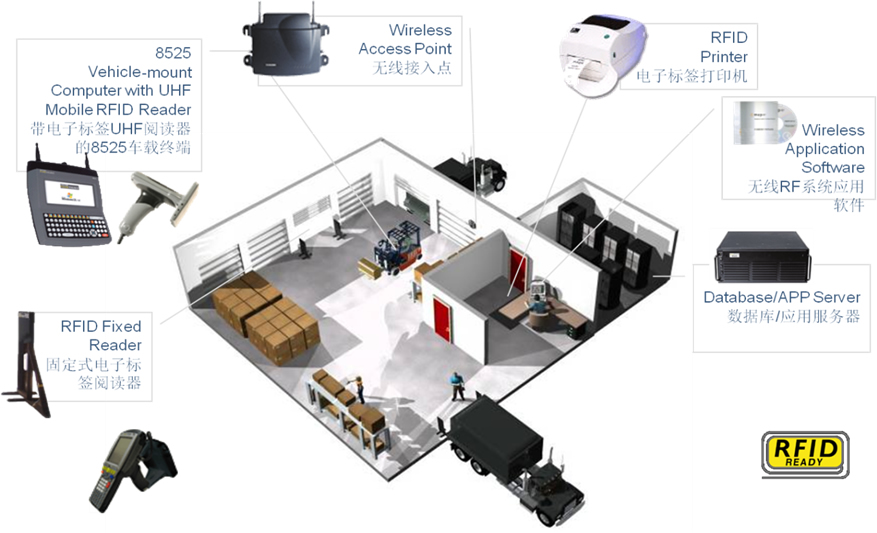
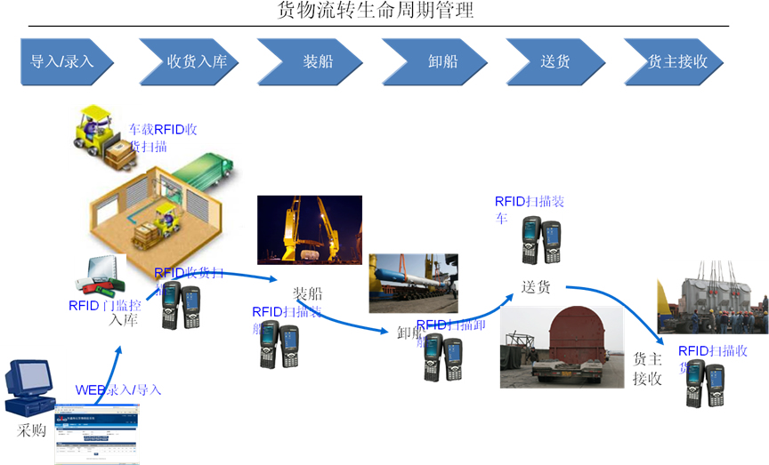
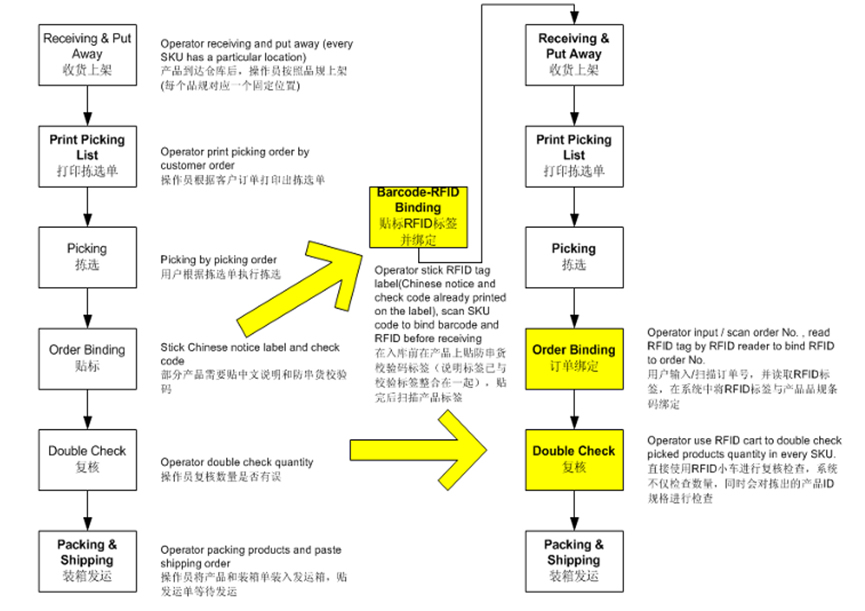
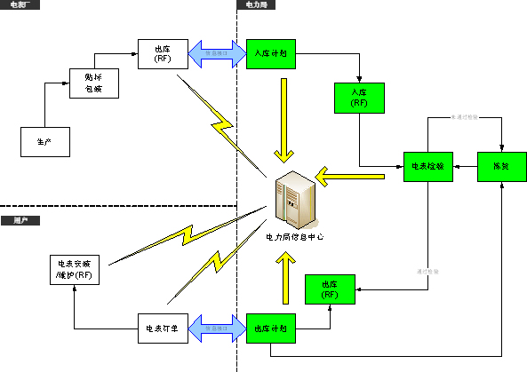
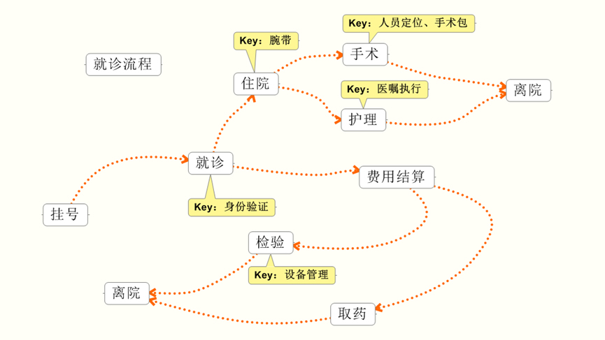
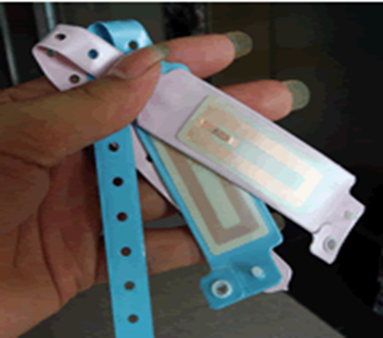
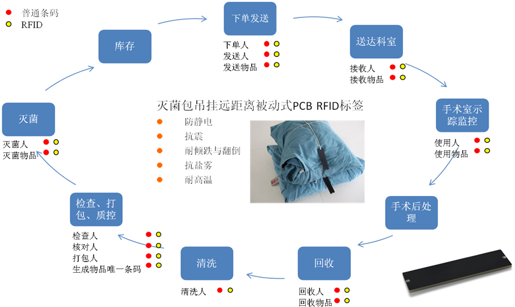
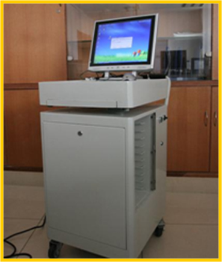
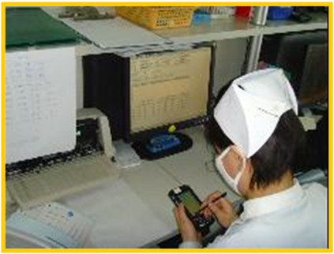
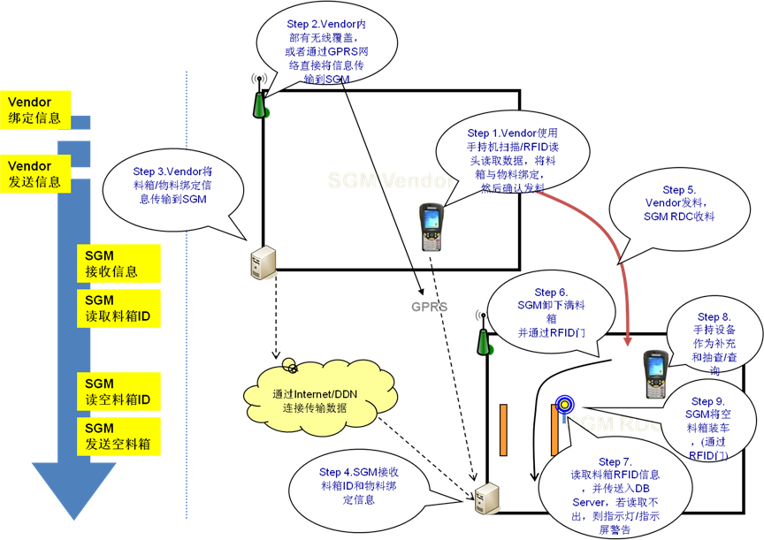

首页>产品与解决方案>物流供应链>物联网
物联网
首语
“物联网”的时代背景：当司机出现操作失误时汽车会自动报警；公文包会提醒主人忘带了什么东西；衣服会“告诉”洗衣机对颜色和水温的要求；安装物联网系统的货车，当装载超重时，汽车会自动告诉你超载了，并且超载多少，但空间还有剩余，告诉你轻重货怎样搭配；当搬运人员卸货时，一只货物包装可能会大叫“你扔疼我了”，或者说“亲爱的，请你不要太野蛮，可以吗？”；当司机在和别人扯闲话，货车会装作老板的声音怒吼“笨蛋，该发车了！
感知行业
物联网（The Internet of things）的定义是通过射频识别（RFID）、红外感应器、全球定位系统、激光扫描器等信息传感设备，按约定的协议，把任何物品与互联网连接起来，进行信息交换和通讯，以实现智能化识别、定位、跟踪、监控和管理的一种网络。
物联网就是“物物相连的互联网”。这有两层意思：第一，物联网的核心和基础仍然是互联网，是在互联网基础上的延伸和扩展的网络；第二，其用户端延伸和扩展到了任何物品与物品之间，进行信息交换和通讯。
感知行业应用方案
感知物流感知电力感知医疗感知工业
RFID技术正在为物流领域带来一场巨大的变革，它以识别速度快、距离远、电子标签不易损坏、容量大等优势取代条码在物流中的位置，从而简化繁杂的工作流程，有效改善物流出入库的效率和透明度。
特点：
- 从货物入库到货物出库全程信息信息记录
- 不受区域限制
- 操作简单
- 各环节操作高效、准确性更高
- RFID标签可循环利用，降低成本
- 货品所在位置准确定位

成功案例
上海恒鑫航运RFID物流跟踪平台：

案例介绍：
- 在室外使用有源RFID保证了准实时地获取货物信息，并且通过远距离读取方式保障了读取数据的完整性。
- 室内的无源RFID应用成本较低与有源RFID相结合，在保证跟踪平台可用的前提下减少用户的投资，从而获得了更高的性价比 。
- 应用了RFID自动识别技术之后，由于RFID可以支持一次读取多个标签，使得收货、卸船、装车等操作效率大大提高。
- 使用高度集成的手持设备，可以同时支持有源，无源标签，并且可以使用条形码读取作为备用补充，使客户可以更加灵活的应用。
- 使用RFID后，各环节业务操作准确率和效率大大提高。
- RFID标签的高抗干扰性。在电磁干扰情况下室外有源标签有效的稳定读取距离可达25米，能满足恒鑫对货物的有效管理需求。
依视路（Essilor）RFID防窜货系统：

案例介绍：
- Barcode-RFID Binding 贴标RFID标签：在入库前在产品上贴防串货校验码标签（说明标签已与校验标签整合在一起），贴完后扫描产品标签。
- Order Binding 订单绑定：用户输入/扫描订单号，并读取RFID标签，将RFID标签与产品品规条码绑定。
- Double Check 复核：直接使用RFID小车进行复核检查，不仅检查数量，同时会对拣出的产品ID规格进行检查。
目前，大多数电力企业都是通过手工对固定资产和现场物资的相关信息进行抄录与核对，这种方式不但工作繁琐、时效低、而且漏洞较多。即使使用了业务管理系统和条码技术，仍无法满足对实物变动信息进行实时记录的需求。现通过采用RFID技术可以实现对各类物品设备（物资）在不同状态下的自动识别、自动采集数据，消除人为错误，实现与信息化系统无缝联结。
成功案例
广州供电局RFID资产管理系统：

案例介绍：
- 在操作时，需要将整理过的资产台帐数据导入系统。
- 通过PC执行发卡程序，包括了发卡，打印标识标签和保存记录 。
- PC客户端生成台帐基础数据和盘点单。
- 通过同步程序将台帐信息及盘点单下载到RF终端。
- 执行贴卡操作(人工操作)，并可以通过RF手持进行检查。
- 贴卡完成后可以执行盘点。
- 盘点完成后可以通过同步程序下载到PC。
- 由PC程序可以生成并导出盘点结果。
江苏电力RFID自动感应门系统：

案例介绍：
依托RFID的技术优势，通过电能表上的UHF标签，利用先进的RFID设备对数据自动采集，经过后台应用软件的智能决策，快速实现对电能表的管理。通过查询系统可以明确地查到每台电能表的状态，以及电能表的去向，及时记录电能表去向的信息，在运输、拆包、检测、盘点时能有效降低员工劳动强度，最大限度的提高效率、准确率以及自动化程度的提高。
物流网技术应用在医疗流程的各个环节中，它不大，每个系统都涉及一点，却使医疗体系都活泛起来，似乎充满着智慧。

成功案例
上海中山医院RFID应用解决方案
患者腕带应用

- 将患者个人信息（如姓名、年龄、通信地址、联络电话、监护人联系方式、身份证、医保证、银行卡号码等）和病理信息（如血型、病史、过敏药物以及其它医学特征信息等），存入腕带的芯片中。
- 对老幼、慢性病患者以及自我表述能力障碍的人员来说，佩带电子腕带作为身份识别的一种管理工具，在执行医嘱及确认手术病人时能准确识别患者身份。
- 特殊患者，在发病时失去表述的能力，直接读取电子腕带的信息，可基本了解病人的病理信息，为抢救赢得宝贵的时间，也可通过电子腕带所载信息，及时联系到家人。
手术室中RFID的应用
- 医护人员佩带RFID卡，系统就能对其进行自动跟踪定位。
- 患者佩带RFID腕带，系统能对其进行自动识别、核对。
通过扫描吊挂在手术物品上的RFID标签，系统精确记录手术前的物品库存、手术中物品的使用情况，术后进行自动计费，从而构成了一条完整的数据链。
RFID在物品灭菌追踪系统中的应用

护士工作中的RFID技术
- 护士利用手持终端读取患者RFID腕带实时查看患者医嘱，以便执行及核对。


目前RFID技术正在为供应链领域带来一场巨大的变革，以识别距离远、快速、不易损坏、容量大等条码无法比拟的优势，简化繁杂的工作流程，有效改善供应链的效率和透明度。托盘或者物料箱是供应链中最基础也是最主要的货物单元，它已经广泛应用于生产、仓储、物流、零售等各个供应链环节。
成功案例
上海通用汽车(SGM)RFID料箱跟踪系统

案例介绍：
- 物流运输一体化——循环取货:多频次、小批量和定时性，采用闭环运作模式。
- 料箱、料架一体化管理是上海通用汽车的另一大特色。
- 此次RFID料箱跟踪的目标是对于通用生产供应链的部件和料箱进行较大范围的跟踪，以达到实时跟踪物料、更精益地进行供应链管理、减少耗损并提高自动化和效率。